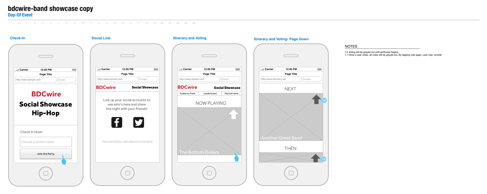

<!DOCTYPE html><html><head><title>Adrienne Debigare Portfolio</title><!-- to do – add the rest of the HEAD attributes--><link rel="stylesheet" href="https://use.fontawesome.com/releases/v5.6.3/css/all.css" integrity="sha384-UHRtZLI+pbxtHCWp1t77Bi1L4ZtiqrqD80Kn4Z8NTSRyMA2Fd33n5dQ8lWUE00s/" crossorigin="anonymous"><link rel="apple-touch-icon" sizes="57x57" href="icons-5b1f36bc41ab31f5b801d48ba1d65781/apple-touch-icon-57x57.png"><link rel="apple-touch-icon" sizes="60x60" href="icons-5b1f36bc41ab31f5b801d48ba1d65781/apple-touch-icon-60x60.png"><link rel="apple-touch-icon" sizes="72x72" href="icons-5b1f36bc41ab31f5b801d48ba1d65781/apple-touch-icon-72x72.png"><link rel="apple-touch-icon" sizes="76x76" href="icons-5b1f36bc41ab31f5b801d48ba1d65781/apple-touch-icon-76x76.png"><link rel="apple-touch-icon" sizes="114x114" href="icons-5b1f36bc41ab31f5b801d48ba1d65781/apple-touch-icon-114x114.png"><link rel="apple-touch-icon" sizes="120x120" href="icons-5b1f36bc41ab31f5b801d48ba1d65781/apple-touch-icon-120x120.png"><link rel="apple-touch-icon" sizes="144x144" href="icons-5b1f36bc41ab31f5b801d48ba1d65781/apple-touch-icon-144x144.png"><link rel="apple-touch-icon" sizes="152x152" href="icons-5b1f36bc41ab31f5b801d48ba1d65781/apple-touch-icon-152x152.png"><link rel="apple-touch-icon" sizes="180x180" href="icons-5b1f36bc41ab31f5b801d48ba1d65781/apple-touch-icon-180x180.png"><meta name="apple-mobile-web-app-capable" content="yes"><meta name="apple-mobile-web-app-status-bar-style" content="black-translucent"><meta name="apple-mobile-web-app-title" content="adrienne-debigare"><meta name="mobile-web-app-capable" content="yes"><meta name="theme-color" content="#fff"><meta name="application-name" content="adrienne-debigare"><link rel="icon" type="image/png" sizes="32x32" href="icons-5b1f36bc41ab31f5b801d48ba1d65781/favicon-32x32.png"><link rel="icon" type="image/png" sizes="16x16" href="icons-5b1f36bc41ab31f5b801d48ba1d65781/favicon-16x16.png"><link rel="shortcut icon" href="icons-5b1f36bc41ab31f5b801d48ba1d65781/favicon.ico"><link rel="apple-touch-startup-image" media="(device-width: 320px) and (device-height: 480px) and (-webkit-device-pixel-ratio: 1)" href="icons-5b1f36bc41ab31f5b801d48ba1d65781/apple-touch-startup-image-320x460.png"><link rel="apple-touch-startup-image" media="(device-width: 320px) and (device-height: 480px) and (-webkit-device-pixel-ratio: 2)" href="icons-5b1f36bc41ab31f5b801d48ba1d65781/apple-touch-startup-image-640x920.png"><link rel="apple-touch-startup-image" media="(device-width: 320px) and (device-height: 568px) and (-webkit-device-pixel-ratio: 2)" href="icons-5b1f36bc41ab31f5b801d48ba1d65781/apple-touch-startup-image-640x1096.png"><link rel="apple-touch-startup-image" media="(device-width: 375px) and (device-height: 667px) and (-webkit-device-pixel-ratio: 2)" href="icons-5b1f36bc41ab31f5b801d48ba1d65781/apple-touch-startup-image-750x1294.png"><link rel="apple-touch-startup-image" media="(device-width: 414px) and (device-height: 736px) and (orientation: landscape) and (-webkit-device-pixel-ratio: 3)" href="icons-5b1f36bc41ab31f5b801d48ba1d65781/apple-touch-startup-image-1182x2208.png"><link rel="apple-touch-startup-image" media="(device-width: 414px) and (device-height: 736px) and (orientation: portrait) and (-webkit-device-pixel-ratio: 3)" href="icons-5b1f36bc41ab31f5b801d48ba1d65781/apple-touch-startup-image-1242x2148.png"><link rel="apple-touch-startup-image" media="(device-width: 768px) and (device-height: 1024px) and (orientation: landscape) and (-webkit-device-pixel-ratio: 1)" href="icons-5b1f36bc41ab31f5b801d48ba1d65781/apple-touch-startup-image-748x1024.png"><link rel="apple-touch-startup-image" media="(device-width: 768px) and (device-height: 1024px) and (orientation: portrait) and (-webkit-device-pixel-ratio: 1)" href="icons-5b1f36bc41ab31f5b801d48ba1d65781/apple-touch-startup-image-768x1004.png"><link rel="apple-touch-startup-image" media="(device-width: 768px) and (device-height: 1024px) and (orientation: landscape) and (-webkit-device-pixel-ratio: 2)" href="icons-5b1f36bc41ab31f5b801d48ba1d65781/apple-touch-startup-image-1496x2048.png"><link rel="apple-touch-startup-image" media="(device-width: 768px) and (device-height: 1024px) and (orientation: portrait) and (-webkit-device-pixel-ratio: 2)" href="icons-5b1f36bc41ab31f5b801d48ba1d65781/apple-touch-startup-image-1536x2008.png"><link href="styles.css" rel="stylesheet"></head></html><body><main><!--include partials/hero--><!-- Later when bug fixed, add hero as block/extend--><article class="project-hero project-hero-background_exp"><h2 class="project-hero__headline project-hero_headline_secondary">The Data Swap</h2></article><article class="content"><aside class="highlights"><div class="titleA"><h3 class="highlights__title">Technologies</h3></div><div class="highlights__list dataA"><ul><li class="highlights__skill p">HTML/CSS</li></ul></div><div class="titleB"><h3 class="highlights__title">Main Skills</h3></div><div class="highlights__list dataB"><!-- TO DO: Data integration. Why is the "each" printing each letter?--><!--ul--><!-- 	each item in `${data.projectSkills}`--><!-- 		li=item--><ul><li class="highlights__skill p">Branding/Identity Design</li><li class="highlights__skill p">Service Design Research</li><li class="highlights__skill p">Event Management</li></ul></div></aside><section class="project-writeup"><div class="project-md"><h3>The Problem</h3>
<blockquote>
<p>How might we develop a brainstorm and prototyping experience that invites inclusive participation with equitable outcomes for both organization and participant?</p>
</blockquote>
<p>In 2013, hackathon fever was reaching a zenith within tech circles.</p>
<script type="text/javascript" src="https://ssl.gstatic.com/trends_nrtr/1709_RC01/embed_loader.js"></script>
<script type="text/javascript">
trends.embed.renderExploreWidget("TIMESERIES", {"comparisonItem":[{"keyword":"big data","geo":"US","time":"2004-01-01 2019-02-12"}],"category":0,"property":""}, {"exploreQuery":"date=all&geo=US&q=big%20data","guestPath":"https://trends.google.com:443/trends/embed/"});
</script>
<p>But what started as a fun networking event for technologists over a weekend, became a semi-exploitative way for companies to <a href="https://www.emeraldinsight.com/doi/abs/10.1108/S0277-283320170000031005">extract hundreds of hours of essentially free labor from young designers and software engineers.</a></p>
<p>The compressed, 36-hour time frame was also proving to be suboptimal. It <a href="https://scholarworks.rit.edu/cgi/viewcontent.cgi?referer=https://www.google.com/&amp;httpsredir=1&amp;article=1867&amp;context=other">excluded people</a> who could not (or would not) work through an entire weekend with little sleep or downtime. Worse still, the work produced was <a href="https://www.fastcompany.com/3054023/why-hackathons-are-bad-for-innovation">largely unusable in production.</a></p>
<p>2013 was also a moment when human-centered organizations were starting to understand the implications of, and their lack of resources in, “big data.” There was much talk about the promise of this new technological frontier, but little idea about how to start. Fortuntately this conversation <a href="https://www.ncbi.nlm.nih.gov/pmc/articles/PMC2745217/">had already been underway for several years</a> within academic circles.</p>
<script type="text/javascript" src="https://ssl.gstatic.com/trends_nrtr/1709_RC01/embed_loader.js"></script>
<script type="text/javascript">
trends.embed.renderExploreWidget("TIMESERIES", {"comparisonItem":[{"keyword":"big data","geo":"US","time":"2004-01-01 2019-02-12"}],"category":0,"property":""}, {"exploreQuery":"date=all&geo=US&q=big%20data","guestPath":"https://trends.google.com:443/trends/embed/"});
</script>
<h3>Team</h3>
<p>Globelab partnered with labs from Northeastern University, MIT, and a local research non-profit called the Boston Area Research Initiative (BARI). I acted as team lead.</p>
<h3>Limitations</h3>
<blockquote>
<p>Mis-aligned institutional schedules and limited funding</p>
</blockquote>
<p>Funding was our main challenge. Our institutions paid our salaries, and space was abundant between our various affiliations. But we were otherwise mostly on our own.</p>
<p>Time became another interesting problem. The academic calendar runs very differently from the business calendar. So while trying to plan and launch the event we had to contend with finals, spring break, end of semester break, etc.</p>
<p>Finally, we had to be careful to brand the event as a more meaningful improvement on the traditional hackathon.</p>
<h3>Metrics</h3>
<ul>
<li>50 applicants</li>
<li>5-7 teams</li>
<li>50% retention</li>
</ul>
<h3>Solutions</h3>
<blockquote>
<p>Extend the time-frame, and add high-touch curation of the experience for participants and organizations</p>
</blockquote>
<p>We extended the traditional time frame to eight months, to allow participants collaboration time over the winter/January break. Extra time, we hypothesized, would improve the likelihood of a polished end-product.</p>
<p>Our academic networks became our main recruitment engine. This balanced our desire for quality applicants with a lack of marketing budget. We created an advisory board of distinguished academic researchers and leading industry data experts who lent their name and authority to the event, and also shared details with their students and colleagues.</p>
<p></p>
<p>We then created a short application to help curate teams. Based on our own experiences with and the research into existing hackathon models, we knew projects would have the greatest chance of success if we built balanced teams beforehand.</p>
<p>To ensure a quality product for participating organizations, we worked directly with representatives to develop research questions and collaboration strategies. We also requested a point person who would act as liaison for the dataset being offered. The idea was to guide researchers towards an outcome that would be beneficial for the organization as well.</p>
<p>We organized a two day kickoff event. The first day was <a href="https://web.northeastern.edu/nulab/boston-data-swap/">a series of presentations</a> by data experts who talked about different strategies and methods of data storytelling. The second day was for participants and participating companies only. We spent this time acclimating everyone to the datasets they’d be using, and giving them time to meet each other.</p>
<p>Over the next eight months participants and companies were tasked with developing some kind of data product that would then be presented back to the group. Globelab hosted monthly video meetings for participants to debrief and share learnings.</p>
<h3>Your role</h3>
<p>I created our brand identity, built our promotional site, led the event design, and assisted in managing the participants through the process.</p>
<h3>Learned Lessons</h3>
<blockquote>
<p>Time frame should be shortened, but reward for both participants and companies was high</p>
</blockquote>
<p>8 months was much too long. Though I am proud of the 50% completion rate, we knew about 3 months in that the time frame was a bit of an overcompensation.</p>
<p>We received feedback from faculty and students that outcomes would have been greater if we had been able to provide classroom credit or otherwise tied the engagement to the student’s academic work.</p>
<p>But largely the experiment was wildly successful. We hit all of our success metrics, and satisfaction was high among participants and companies. We generated 74 applicants (50% more than number we had anticipated) with exceptional credentials and diverse academic backgrounds. At the end of eight months we still maintained three teams of the original six which was exactly 50% retention. Additionally, several of our participants leveraged their time with The Data Swap to secure advanced degrees with Ivy League schools, or secure places with competitive fellowships across the country.</p>
</div></section></article></main><footer class="footer"><nav><ul class="footer__links"><li class="footer__logo"></li><li class="footer__link link__knockout"><i class="far fa-file-alt"></i><a href="https://www.dropbox.com/s/j6y7je52kikc5rq/DebigareResume.pdf?dl=0">Resume (Print)</a></li><li class="footer__link link__knockout"><i class="fab fa-github-square"></i><a href="https://www.github.com/adebigare">Github</a></li><li class="footer__link link__knockout"><i class="fab fa-linkedin"></i><a href="https://www.linkedin/in/adebigare">LinkedIn</a></li></ul></nav></footer><script type="text/javascript" src="app.996e93d9fbf533970deb.js"></script></body>